🏠 Selamat Datang di Website SDGs Kolaborasi
Website ini dibuat untuk memberikan informasi tentang SDGs, khususnya SDG 4 tentang Pendidikan Berkualitas. Harapannya, pembaca bisa memahami tujuan, tantangan, dan upaya yang dapat dilakukan untuk mendukung pembangunan berkelanjutan. Semoga isi website ini bermanfaat dan mudah dipahami. Pilih sub-menu di atas (misalnya: Apa Itu SDGs? atau Fokus Kami) untuk langsung menuju ke informasi yang Anda butuhkan, atau geser ke bawah untuk ringkasan.
🌍 17 TUJUAN SDGs (Sustainable Development Goals)
Sustainable Development Goals (SDGs) adalah agenda pembangunan global yang disusun oleh Perserikatan Bangsa-Bangsa (PBB) untuk menciptakan dunia yang lebih baik pada tahun 2030. SDGs terdiri dari 17 tujuan besar yang berkaitan dengan isu ekonomi, sosial, lingkungan, dan keberlanjutan.


1. TANPA KEMISKINAN
Mengakhiri kemiskinan dalam segala bentuk di mana pun. Tujuan ini berfokus pada pemberian akses terhadap sumber daya ekonomi, layanan dasar, dan perlindungan sosial bagi semua orang, serta membangun ketahanan masyarakat miskin dan rentan.
 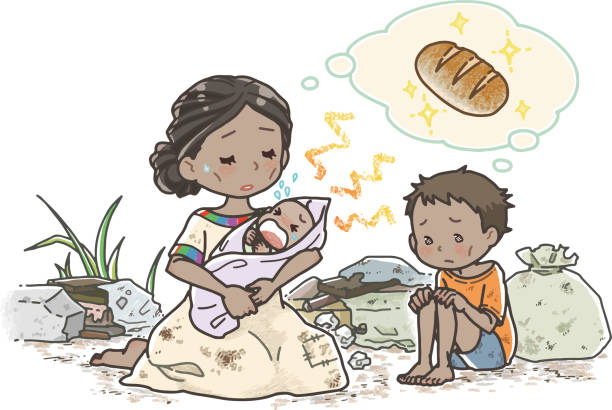
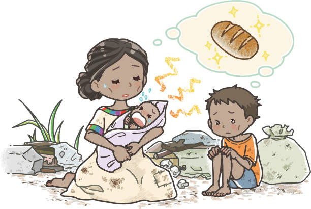
2. TANPA KELAPARAN
Mengakhiri kelaparan, mencapai ketahanan pangan dan perbaikan nutrisi, serta mendorong pertanian berkelanjutan. Memastikan semua orang memiliki akses terhadap makanan yang aman, bergizi, dan cukup sepanjang tahun.
 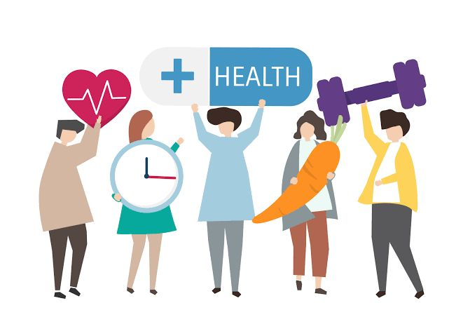
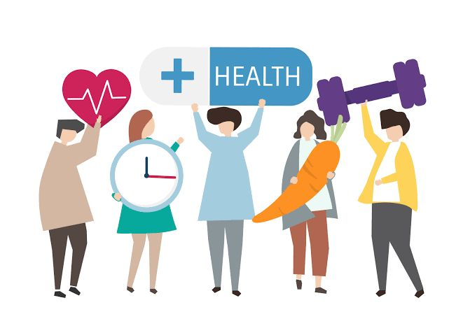
3. KEHIDUPAN SEHAT DAN SEJAHTERA
Memastikan kehidupan yang sehat dan mendukung kesejahteraan bagi semua orang di segala usia. Mencakup pengurangan angka kematian ibu dan anak, serta pemberantasan penyakit menular dan tidak menular.
4. PENDIDIKAN BERKUALITAS
Memastikan pendidikan yang inklusif dan berkualitas setara, serta mendukung kesempatan belajar seumur hidup bagi semua. Fokus pada akses pendidikan yang merata dan peningkatan kualitas pembelajaran.
 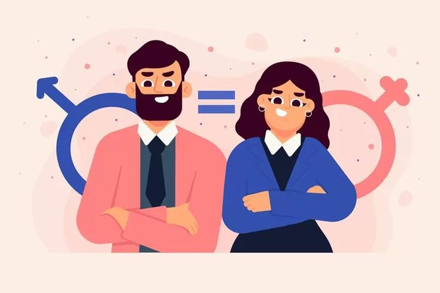
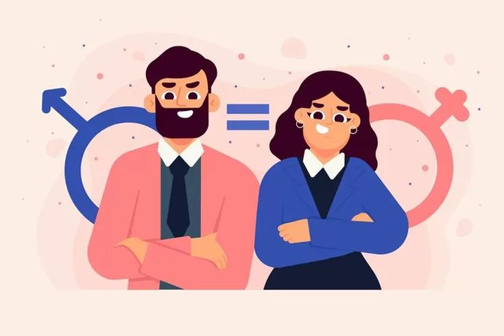
5. KESETARAAN GENDER
Mencapai kesetaraan gender dan memberdayakan semua perempuan dan anak perempuan. Menghapus diskriminasi, kekerasan berbasis gender, serta memastikan partisipasi penuh dalam kepemimpinan dan pengambilan keputusan.
 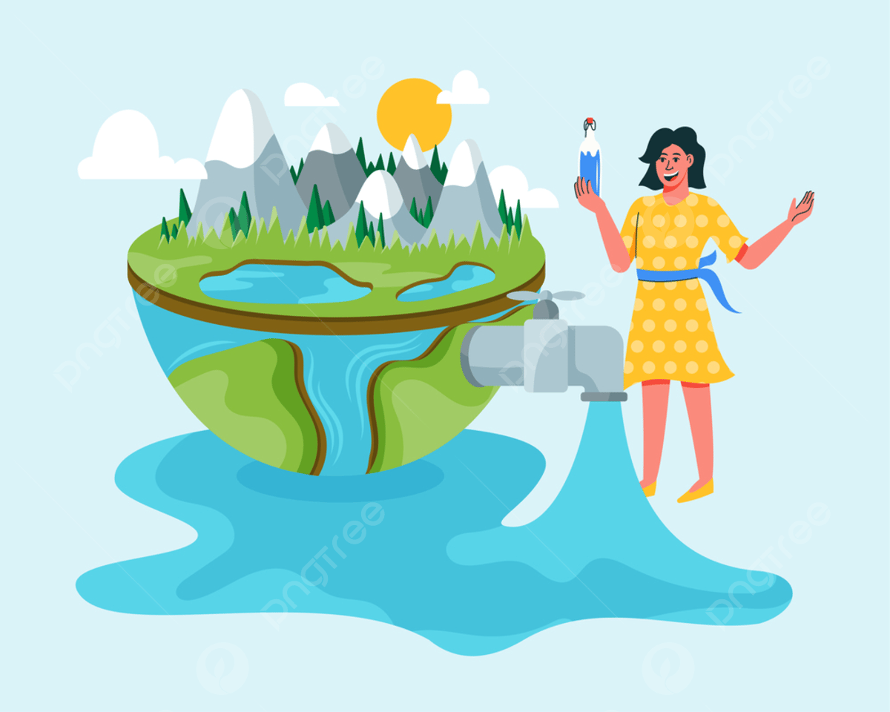
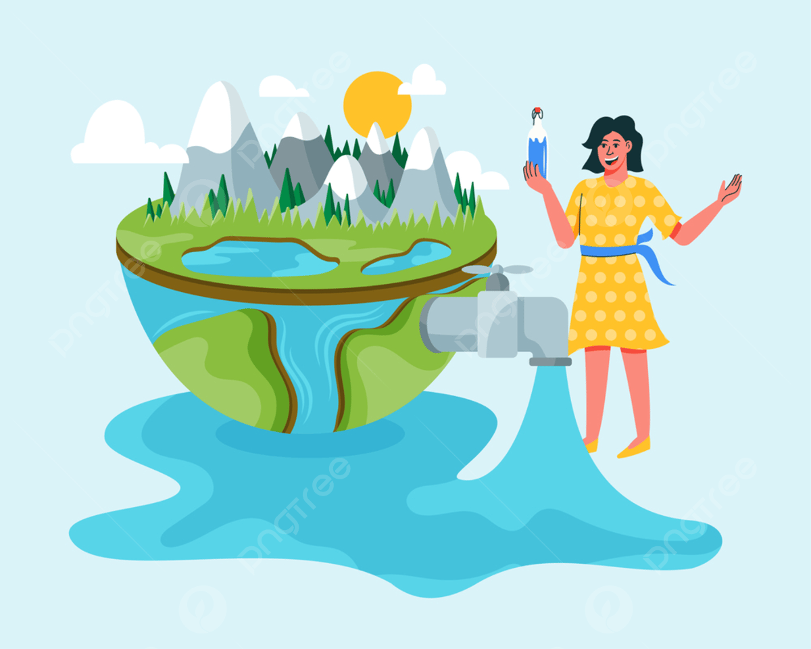
6. AIR BERSIH DAN SANITASI LAYAK
Menjamin ketersediaan dan pengelolaan air bersih serta sanitasi yang berkelanjutan untuk semua. Mencakup akses universal terhadap air minum yang aman dan terjangkau, serta pengelolaan sumber daya air yang berkelanjutan.
 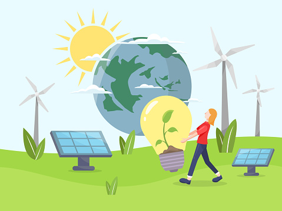
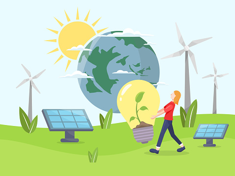
7. ENERGI BERSIH DAN TERJANGKAU
Memastikan akses terhadap energi yang terjangkau, andal, berkelanjutan, dan modern untuk semua. Mendorong penggunaan energi terbarukan dan peningkatan efisiensi energi di berbagai sektor.
 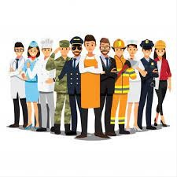
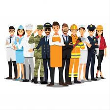
8. PEKERJAAN LAYAK DAN PERTUMBUHAN EKONOMI
Mendorong pertumbuhan ekonomi yang berkelanjutan dan inklusif, kesempatan kerja penuh dan produktif, serta pekerjaan yang layak untuk semua. Mendukung kewirausahaan dan inovasi dalam menciptakan lapangan kerja.
 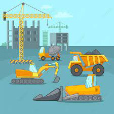
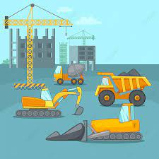
9. INDUSTRI, INOVASI DAN INFRASTRUKTUR
Membangun infrastruktur yang tangguh, mempromosikan industrialisasi yang inklusif dan berkelanjutan, serta mendorong inovasi. Mengembangkan infrastruktur berkualitas yang mendukung pembangunan ekonomi dan kesejahteraan manusia.
10. BERKURANGNYA KESENJANGAN
Mengurangi kesenjangan dalam dan antar negara. Mempromosikan inklusi sosial, ekonomi, dan politik bagi semua, terlepas dari usia, jenis kelamin, disabilitas, ras, etnis, asal usul, agama, atau status ekonomi lainnya.
 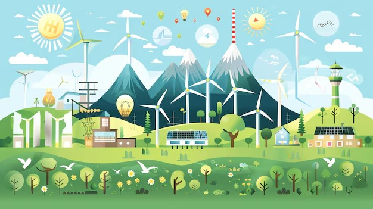
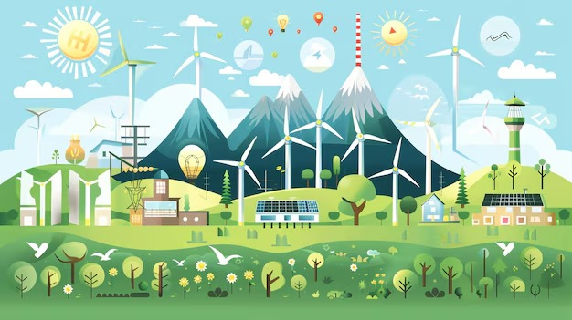
11. KOTA DAN KOMUNITAS BERKELANJUTAN
Membuat kota dan permukiman inklusif, aman, tangguh, dan berkelanjutan. Mengembangkan perkotaan yang berkelanjutan dengan akses terhadap perumahan layak, transportasi umum, dan ruang terbuka hijau.
12. KONSUMSI DAN PRODUKSI BERTANGGUNG JAWAB
Memastikan pola konsumsi dan produksi yang berkelanjutan. Mengelola sumber daya alam secara efisien, mengurangi limbah, dan mendorong praktik bisnis yang berkelanjutan.
 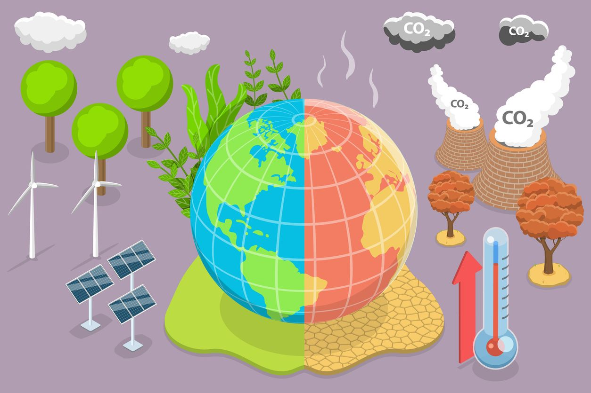
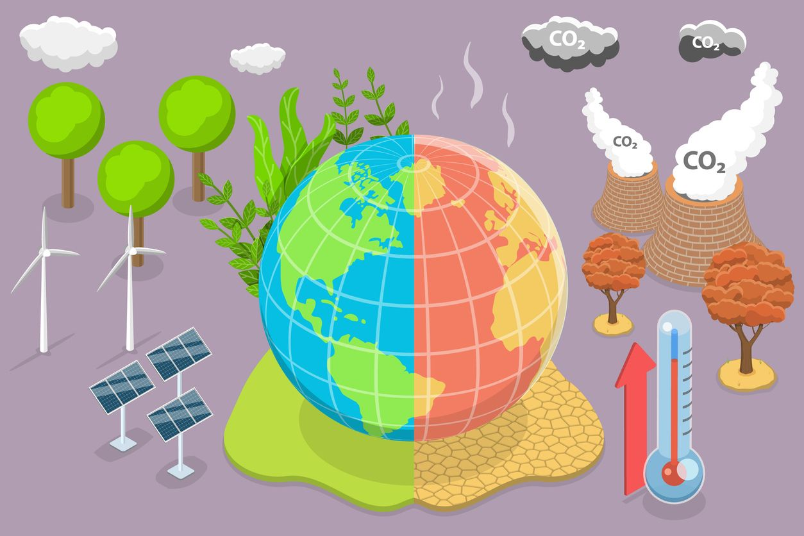
13. PENANGANAN PERUBAHAN IKLIM
Mengambil tindakan segera untuk memerangi perubahan iklim dan dampaknya. Memperkuat ketahanan terhadap bahaya terkait iklim dan mengintegrasikan langkah-langkah perubahan iklim ke dalam kebijakan nasional.
 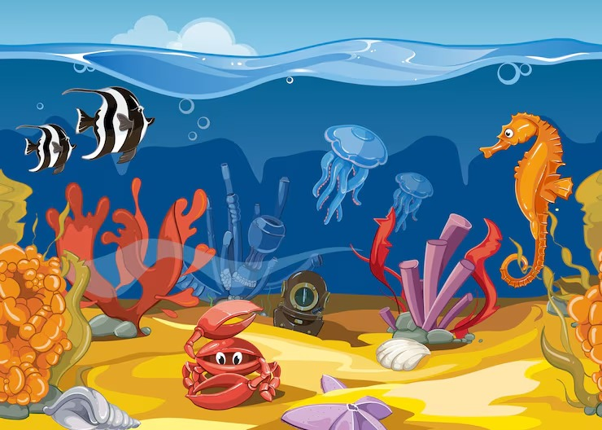
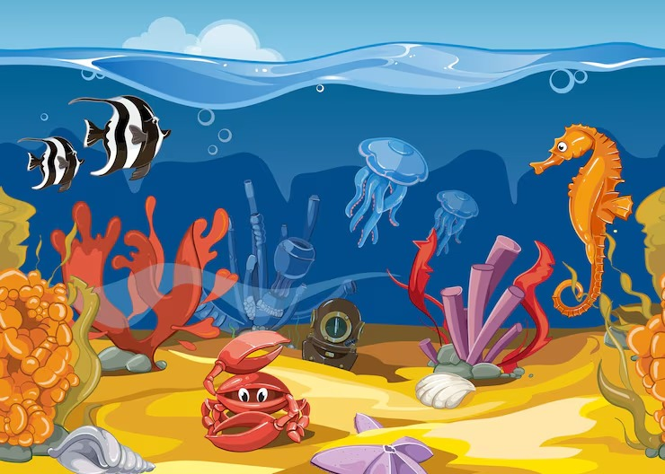
14. EKOSISTEM LAUTAN
Melestarikan dan memanfaatkan secara berkelanjutan sumber daya kelautan untuk pembangunan berkelanjutan. Mengurangi polusi laut, melindungi ekosistem laut, dan mengatur penangkapan ikan berlebihan.
 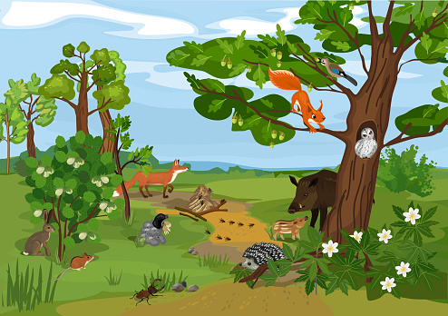
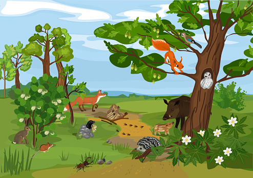
15. EKOSISTEM DARATAN
Melindungi, memulihkan, dan mendukung penggunaan berkelanjutan ekosistem daratan. Mengelola hutan secara berkelanjutan, memerangi desertifikasi, serta menghentikan kehilangan keanekaragaman hayati.
 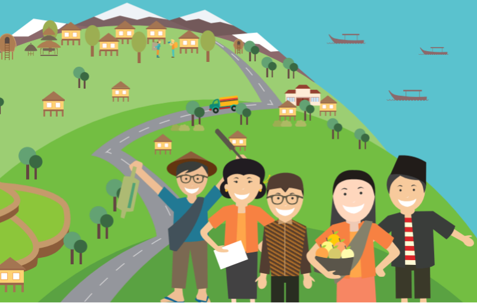
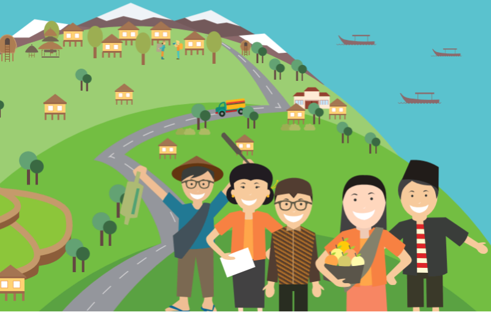
16. PERDAMAIAN, KEADILAN DAN KELEMBAGAAN YANG TANGGUH
Mendorong masyarakat yang damai dan inklusif untuk pembangunan berkelanjutan. Mengurangi kekerasan, memerangi kejahatan terorganisir, serta membangun institusi yang efektif dan akuntabel.


17. KEMITRAAN UNTUK MENCAPAI TUJUAN
Memperkuat sarana pelaksanaan dan merevitalisasi kemitraan global untuk pembangunan berkelanjutan. Meningkatkan kerja sama internasional dalam bidang keuangan, teknologi, dan peningkatan kapasitas.
🎓 SDG 4 – PENDIDIKAN BERKUALITAS
Pendidikan untuk Semua
SDG 4 adalah tujuan pembangunan berkelanjutan yang berfokus pada penyediaan pendidikan berkualitas, inklusif, dan merata bagi semua orang. Tujuan ini menegaskan bahwa setiap individu, tanpa melihat latar belakang sosial, ekonomi, gender, atau lokasi tempat tinggal, berhak mendapatkan kesempatan belajar yang sama. Pendidikan tidak hanya dilihat sebagai proses masuk sekolah, tetapi juga sebagai pengalaman belajar yang aman, mendukung, dan relevan dengan kebutuhan masa depan.
Peningkatan Kualitas Pendidikan
SDG 4 menyoroti beberapa hal penting, seperti akses pendidikan dasar dan menengah secara gratis, peningkatan kemampuan guru melalui pelatihan, penyediaan fasilitas yang layak, serta pengembangan kurikulum yang lebih adaptif terhadap perkembangan zaman. Selain itu, SDG 4 juga mendorong kesempatan pendidikan sepanjang hayat, termasuk pelatihan keterampilan, kursus, dan pembelajaran berbasis teknologi.
Dampak Pendidikan Berkualitas
Dengan tercapainya SDG 4, masyarakat diharapkan memiliki keterampilan dan wawasan yang cukup untuk berpartisipasi dalam dunia kerja, kehidupan sosial, dan pembangunan negara. Pendidikan yang baik menjadi fondasi penting untuk mengurangi kemiskinan, meningkatkan kesejahteraan, dan menciptakan generasi yang siap menghadapi tantangan global.
📊 Analisis SDG 4 (Pilih Sub-Menu di Atas)
Pilih salah satu sub-menu (Kondisi & Tantangan, Potensi & Peluang, atau Peran Masyarakat) untuk melihat detail analisis kami tentang implementasi SDG 4 di Indonesia.
📉 Kondisi dan Tantangan
🌍 Kondisi Global & Indonesia
Secara global, kemajuan menuju SDG 4 berjalan, tetapi lambat dan tidak merata: beberapa indikator, seperti penyelesaian jenjang sekolah sudah membaik, namun banyak target masih terancam gagal tercapai pada 2030. Laporan pemantauan pendidikan UNESCO/Global Education Monitoring (GEM) 2024 menunjukkan bahwa populasi anak yang tidak bersekolah hanya turun sedikit dalam hampir satu dekade terakhir, dan dunia masih jauh dari target beberapa indikator utama.
Data internasional juga menunjukkan tingkat penyelesaian: pada 2023 tingkat penyelesaian mencapai sekitar 88% untuk SD tingkat dasar (primary), 78% untuk lower secondary, dan 59% untuk upper secondary, tetapi angka ini berbeda jauh antar wilayah.
🚧 Tantangan Utama
1. Kualitas pembelajaran dan literasi dasar masih menjadi masalah besar: banyak anak yang hadir di sekolah namun belum mencapai kompetensi dasar membaca dan berhitung (foundational literacy & numeracy).
2. Kesenjangan akses anak di daerah terpencil, keluarga miskin, atau penyandang disabilitas seringkali mengalami hambatan akses fasilitas, guru, dan materi pembelajaran.
3. Kekurangan dan distribusi guru berkualitas: banyak negara mengalami defisit guru atau guru kurang mendapatkan pelatihan yang memadai, yang berdampak pada hasil belajar.

💻 Tantangan Lanjutan
4. Digital divide dan infrastruktur: adopsi pembelajaran daring meningkat setelah pandemi, tetapi akses internet dan perangkat tidak merata sehingga memperlebar ketimpangan pendidikan.
5. Pembiayaan pendidikan dan kebijakan yang belum selalu tepat sasaran juga menghambat percepatan pencapaian target SDG 4.
Di Indonesia, data resmi terbaru dari Kemendikbud Ristek dan BPS melaporkan peningkatan akses pendidikan (jumlah peserta didik dan satuan pendidikan meningkat) serta beberapa perbaikan lingkungan belajar, tetapi tantangan kualitas pembelajaran, pemerataan antar daerah (termasuk daerah terpencil), dan ketersediaan guru tetap nyata.
📈 Potensi dan Peluang

🚀 Potensi Teknologi & Kebijakan
Potensi besar dalam mencapai SDG 4 muncul dari semakin pesatnya perkembangan teknologi pendidikan dan ketersediaan bahan ajar digital. Teknologi ini membuka kesempatan untuk memperluas akses belajar bagi para siswa di berbagai daerah, termasuk wilayah yang sulit dijangkau.
Jika didukung dengan infrastruktur memadai dan pelatihan guru yang kuat, dapat disediakan pengalaman belajar yang lebih menarik, interaktif, dan juga bervariasi. Selain itu, meningkatnya kesadaran publik dan komitmen pemerintah terhadap target SDG 4 memungkinkan adanya kebijakan yang lebih terarah, termasuk pemanfaatan dashboard monitoring pendidikan untuk menentukan intervensi yang tepat sasaran.
🤝 Program & Generasi Muda
Peluang lainnya datang dari program-program dukungan pendidikan seperti beasiswa, bantuan biaya, dan kerja sama antara pemerintah, sektor swasta, serta organisasi internasional. Program seperti KIP di Indonesia membantu membuka akses ke jenjang pendidikan yang lebih tinggi dan pelatihan vokasi.
Generasi muda yang peka teknologi juga menjadi peluang besar, karena mereka mampu berperan sebagai agen perubahan melalui pembuatan konten belajar lokal, tutor sebaya, hingga pembentukan komunitas belajar. Dengan pengelolaan yang baik, kombinasi teknologi, data pendidikan, dan kolaborasi banyak pihak dapat meningkatkan kualitas pembelajaran secara signifikan dan mempercepat pencapaian tujuan SDG 4.
👥 Peran Masyarakat
✨ Peran masyarakat (konkrit & yang bisa dilakukan sekarang)
🏫 Sekolah & Guru
Meningkatkan praktik pembelajaran yang berpusat pada siswa, menerapkan penilaian formatif untuk memantau literasi/numerasi dasar, dan ikut pelatihan profesionalisasi guru.
👨👩👧👦 Orang tua & Keluarga
Mendukung waktu belajar di rumah, membaca bersama anak, dan memantau kehadiran serta tugas sekolah; keluarga yang aktif meningkatkan keberlangsungan belajar anak.

🤝 Komunitas & LSM
Memfasilitasi kelas remedial, program literasi komunitas, perpustakaan keliling, atau program bimbingan belajar untuk anak yang tertinggal; juga membantu identifikasi anak putus sekolah.
💼 Sektor swasta & Teknologi
Menyediakan infrastruktur (mis. akses internet, perangkat) di daerah kurang terlayani, menyumbang modul pembelajaran digital yang relevan, atau bermitra dengan sekolah untuk program magang/vokasi.
🎓 Pemerhati & Pelajar
Pelajar bisa menjadi tutor sebaya, membuat komunitas belajar online/offline, dan mengadvokasi kebijakan pendidikan setempat melalui OSIS atau komunitas pelajar.
💫 Peran-peran ini penting karena pencapaian SDG 4 tidak cukup hanya kebijakan pusat. Tindakan lokal dan berkelanjutan dari masyarakatlah yang mengisi celah implementasi di lapangan.
💡 Solusi untuk Mewujudkan SDG 4
🎯 Tindakan Nyata untuk Mendukung Pendidikan Berkualitas


Sebagai pelajar, saya sebenarnya punya banyak cara untuk ikut berperan dalam menyebarluaskan pendidikan berkualitas di Indonesia, meskipun masih dalam lingkup kecil. Salah satu langkah yang bisa saya lakukan adalah berbagi pengetahuan dengan teman atau adik kelas yang membutuhkan bantuan. Misalnya membantu mereka belajar sebelum ulangan, membuat rangkuman materi, atau menjelaskan pelajaran yang sulit dipahami. Langkah sederhana ini bisa membantu menciptakan lingkungan belajar yang saling mendukung.
Selain itu, saya bisa ikut serta dalam kegiatan sosial pendidikan, seperti mengajar anak-anak di komunitas, ikut pengabdian masyarakat, atau terlibat dalam program literasi jika sekolah mengadakannya. Kegiatan seperti ini membantu memperluas akses pendidikan bagi anak-anak yang mungkin tidak mendapatkan kesempatan belajar yang sama.


Saya juga bisa memanfaatkan media sosial untuk menyebarkan informasi positif tentang pentingnya pendidikan. Contohnya, membuat konten edukatif sederhana, membagikan tips belajar, atau mendorong teman-teman supaya lebih peduli terhadap isu-isu pendidikan di Indonesia. Dengan cara ini, awareness tentang SDG 4 bisa tersebar lebih luas.
Di sekolah, saya juga bisa ikut menjaga budaya belajar yang baik: disiplin, menghargai guru, tidak menyontek, aktif bertanya, dan menggunakan fasilitas belajar dengan bertanggung jawab. Sikap seperti ini menunjukkan bahwa pendidikan berkualitas dimulai dari diri sendiri.


Terakhir, saya bisa mendukung kegiatan atau program sekolah yang berkaitan dengan pemerataan pendidikan, seperti donasi buku, penggalangan alat tulis, atau kerja sama dengan sekolah lain. Walaupun kecil, kontribusi ini tetap berarti karena membantu menciptakan kesempatan belajar yang lebih merata.
🌟 Pengalaman Pribadi Saya dalam Melaksanakan Pendidikan Berkualitas
Sebagai siswi di Santa Ursula Jakarta, saya merasa sangat beruntung karena bisa merasakan langsung bagaimana pendidikan berkualitas diwujudkan setiap hari. Sekolah memberikan lingkungan belajar yang aman, nyaman, dan lengkap, mulai dari ruang kelas, perpustakaan, laboratorium, hingga fasilitas teknologi yang mendukung proses pembelajaran. Para guru juga sangat peduli dan selalu mendorong saya untuk berpikir kritis, bertanya, dan mengembangkan potensi diri. Melalui pembelajaran yang terarah dan pendampingan yang konsisten, saya benar-benar merasakan bahwa hak atas pendidikan berkualitas bukan hanya sebuah konsep, tetapi sesuatu yang saya alami sendiri dalam keseharian.
Selain itu, Santa Ursula Jakarta menanamkan nilai kedisiplinan, kepedulian, dan tanggung jawab sosial yang membuat saya memahami bahwa pendidikan tidak hanya tentang nilai akademik, tetapi juga pembentukan karakter. Berbagai kegiatan seperti proyek sosial, kerja kelompok, dan program pengembangan diri membantu saya belajar bekerja sama, peduli lingkungan sekitar, dan menghargai perbedaan. Pengalaman ini membuat saya semakin memahami pentingnya SDG 4, karena ketika seseorang mendapatkan pendidikan yang baik, ia tidak hanya berkembang secara pribadi, tetapi juga mampu memberi kontribusi yang lebih besar bagi masyarakat. Dengan dapat bersekolah di Santa Ursula Jakarta, saya merasa ikut ambil bagian dalam upaya mewujudkan pendidikan berkualitas bagi semua.
🤝 Bentuk Kerjasama SDGs (Pilih Sub-Menu di Atas)
SDG 4 memerlukan kerja sama dari berbagai pihak. Silakan pilih sub-menu Bilateral, Regional, atau Multilateral untuk melihat contoh bentuk kerja sama tersebut.
🌐 Kerjasama Bilateral

🇮🇩🤝🇯🇵 Kerjasama Dua Arah
Kerja sama bilateral membuka peluang bagi dua negara untuk menggabungkan sumber daya, teknologi, dan keahlian sehingga pendidikan dapat berkembang lebih cepat dan terarah. Contohnya, satu negara dapat memberikan bantuan pelatihan guru, beasiswa studi, transfer teknologi EdTech, atau dukungan kurikulum sains dan vokasi sesuai kebutuhan negara mitra.
Program pertukaran pelajar dan dosen juga dapat meningkatkan kualitas pembelajaran serta memperluas wawasan global peserta didik. Melalui kemitraan dua arah yang fleksibel, negara dapat mempelajari model pendidikan yang sukses dari mitra lain dan menyesuaikannya dengan kondisi lokal.
Dengan demikian, kerja sama bilateral menjadi strategi yang efektif untuk memperkuat kualitas pendidikan sekaligus mempercepat pencapaian SDG 4.
🌏 Kerjasama Regional
🏛️ Kolaborasi Kawasan ASEAN
Kerja sama regional dapat mempercepat pencapaian SDG 4 melalui kolaborasi antarnegara dalam satu kawasan, misalnya pertukaran praktik terbaik pendidikan, penyelarasan standar kompetensi, dan penguatan pelatihan guru.
Di ASEAN, negara-negara anggota dapat membuat platform bersama untuk berbagi modul digital, memperluas akses beasiswa regional, serta mengembangkan pusat riset pendidikan yang fokus pada inovasi pembelajaran.
Selain itu, kerja sama regional memungkinkan pembangunan infrastruktur pendidikan di daerah perbatasan, termasuk jaringan internet dan sekolah berbasis komunitas, sehingga kesenjangan kualitas pendidikan antardaerah dapat ditekan.
Dengan solidaritas dan komitmen kawasan, setiap negara dapat memperkuat sistem pendidikannya sekaligus saling mendukung pencapaian target SDG 4.
🌍 Kerjasama Multilateral
🌐 Sinergi Global
Kerja sama multilateral berperan besar dalam mewujudkan SDG 4 karena melibatkan banyak pihak, negara-negara, lembaga internasional seperti UNESCO, UNICEF, dan World Bank, serta sektor swasta global, untuk memberikan dukungan luas bagi peningkatan kualitas pendidikan.
Kerja sama ini mencakup pendanaan pendidikan, penelitian internasional, proyek digitalisasi sekolah, peningkatan literasi, hingga penguatan pelatihan guru skala global.
Selain itu, lembaga multilateral menyediakan data, monitoring, dan evaluasi yang membantu negara mengidentifikasi tantangan serta menentukan kebijakan yang lebih tepat sasaran.
Dengan sinergi global yang terstruktur, negara-negara dapat saling melengkapi dan mempercepat pemerataan pendidikan berkualitas di seluruh dunia sesuai target SDG 4.
👥 Tentang Kami
📝 Informasi Pribadi
"Berusaha memberikan yang terbaik dalam setiap karya dan pelayanan" ✨
🌍 Tujuan Pembuatan Website
Website ini dibuat sebagai media informasi dan edukasi untuk membantu masyarakat, khususnya pelajar, memahami pentingnya Sustainable Development Goals (SDGs), terutama SDG 4 yaitu Pendidikan Berkualitas.
Melalui website ini, saya ingin menyajikan penjelasan yang lengkap namun mudah dipahami mengenai tantangan, potensi, dan solusi dalam mewujudkan pendidikan yang inklusif, merata, dan bermutu di Indonesia.
Selain itu, website ini juga bertujuan menunjukkan bagaimana kerja sama bilateral, regional, dan multilateral berperan penting dalam memperkuat sistem pendidikan di berbagai negara.
Dengan adanya platform ini, saya berharap semakin banyak orang yang sadar akan pentingnya pendidikan berkualitas dan termotivasi untuk ikut berkontribusi, baik melalui tindakan sederhana maupun keterlibatan langsung dalam kegiatan sosial dan pembelajaran.
Website ini juga menjadi bentuk partisipasi saya dalam kampanye SDGs serta sebagai wadah latihan untuk mengembangkan kemampuan literasi digital serta pembuatan website dan kolaborasi lintas mata pelajaran (ILP).
💫 Nilai Serviam dalam Proyek Ini
Nilai Serviam yang paling menonjol selama pembuatan website ini adalah totalitas dan pelayanan. Dalam proses mengerjakan proyek ini, saya berusaha memberikan yang terbaik mulai dari mengumpulkan informasi, menyusun isi, sampai membuat tampilan website yang rapi dan mudah dipahami.
Saya ingin website ini bukan hanya memenuhi tugas sekolah, tetapi juga benar-benar bermanfaat bagi orang lain yang ingin memahami SDG 4 dan pentingnya pendidikan berkualitas.
Dengan bekerja secara menyeluruh dan penuh tanggung jawab, saya merasa menerapkan totalitas dalam berkarya. Sementara itu, semangat pelayanan terlihat dari keinginan saya untuk menghadirkan informasi yang jelas, akurat, dan dapat membantu siapa pun yang membacanya.
🎯 Totalitas dan pelayanan ini menjadi wujud nyata nilai Serviam dalam proses pembuatan website ini.
🤩 Nilai Pancasila dalam SDG 4
Nilai Pancasila yang paling menonjol dari SDG 4 adalah Sila ke-5, Keadilan Sosial bagi Seluruh Rakyat Indonesia. SDG 4 menekankan bahwa setiap orang, tanpa memandang latar belakang, ekonomi, gender, atau kondisi sosial, berhak mendapatkan pendidikan yang layak dan bermutu.
Semangat ini sejalan dengan prinsip keadilan sosial yang memastikan seluruh warga negara memiliki kesempatan yang sama untuk berkembang melalui pendidikan.
Selain itu, Sila ke-2, Kemanusiaan yang Adil dan Beradab, juga sangat tampak dalam upaya menghadirkan pendidikan inklusif yang menghargai martabat manusia, mendorong kesetaraan, dan menghapuskan diskriminasi dalam dunia pendidikan.
📚 Dengan kata lain, SDG 4 bukan hanya berkaitan dengan akses belajar, tetapi juga mencerminkan nilai kemanusiaan dan keadilan yang menjadi dasar Pancasila.